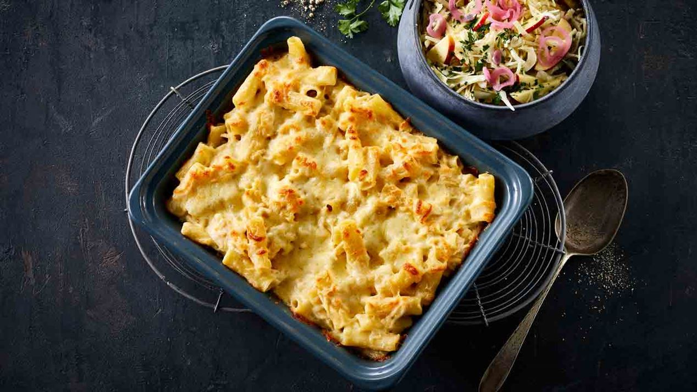

Macaroni and cheese recipe

Description
Quick, easy, and tasty macaroni and cheese dish. Fancy, designer mac and cheese often costs forty or fifty dollars to prepare when you
have so many exotic and expensive cheeses, but they aren't always the best tasting. This simple recipe is cheap and tasty.
Ingredients
- 1 (8 ounce) box elbow macaroni
- ¼ cup butter
- ¼ cup all-purpose flour
- ½ teaspoon salt
- ground black pepper to taste
- 2 cups milk
- 2 cups shredded Cheddar cheese
Steps
- Bring a pot of water to a boil. Cook elbow macaroni until al dente, about 8 minutes.
-
While the macaroni is cooking, go ahead and start on the roux. A roux is a thickening agent made of one part
fat and one part flour that makes up the base of this creamy mac and cheese.
To make the roux, start by melting butter in a saucepan over medium heat. Add flour, salt, and pepper and
stir until smooth. Slowly pour in milk and stir until the mixture is smooth and bubbling. Be careful to not let the milk burn.
-
Finally, the most crucial step: Add cheese! Slowly stir in Cheddar cheese until smooth and melted. We recommend
you grate your own cheese because pre-shredded cheese won't incorporate into the mixture as well as block cheese.
Once the macaroni is finished cooking, drain and stir into cheese sauce until coated.
Click here for the original recipe